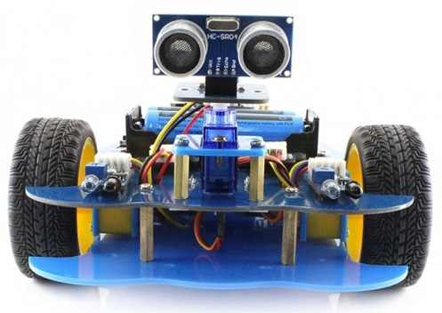

หน้าแรก
เกี่ยวกัสาขาวิชา
หลักสูตร
ห้องปฏิบัติการ
ติดต่อสาขา
ปวช.ช่างเทคนิคคอมพิวเตอร์

ชื่อหลักสูตร
ชื่อภาษาไทย หลักสูตรประกาศนียบัตรวิชาชีพ ประเภทวิชาอุตสาหกรรมดิจิทัลและเทคโนโลยีสารสนเทศ สาขาวิชาช่างเทคนิคคอมพิวเตอร์
ชื่อภาษาอังกฤษ Vocational of Computer Technology
วัตถุประสงค์
ผลิตนักเรียนในสาขาวิชาชีพช่างเทคนิคคอมพิวเตอร์ เพื่อรองรับการทำงานในภาครัฐและภาคเอกชน
ผลิตนักเรียนเพื่อเข้าสู่ระบบอุดมศึกษา เพื่อเพิ่มพูนความรู้ความเชี่ยวชาญที่สูงขึ้น
ความแตกต่างของปวช. เทคนิคคอมพิวเตอร์ กับ ปวช.คอมพิวเตอร์สาขาอื่น ๆ
เรียนทั้งฮาร์ดแวร์และซอฟร์แวร์ที่เกี่ยวข้องกับคอมพิวเตอร์
เน้นการเรียนการสอนซึ่งนำไปใช้งานจริงได้ทันที
สามารถศึกษาต่อ ระดับ ป.ตรี ทางวิศวกรรมศาสตร์ เช่น วิศวกรรมคอมพิวเตอร์, วิศวกรรมเมคาทรอนิกส์ หรือวิทยาการคอมพิวเตอร์ได้
@CopyRight By Mr.Peeranat Seeprasert 057 TC-RMUTP 2568